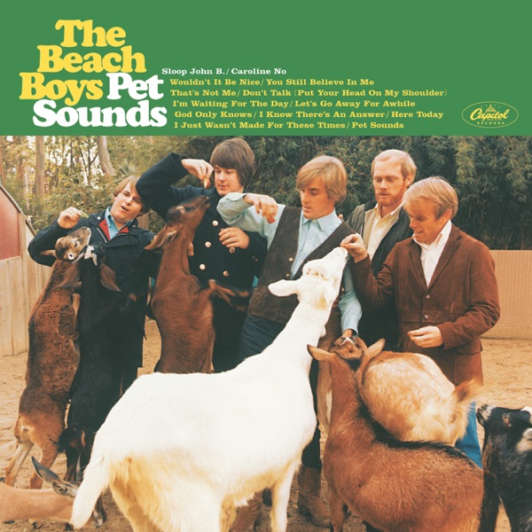

Pet Sounds
The Beach Boys
Upgrade idea: Already the definitive version — Brian Wilson-approved mono mix on 180g vinyl. Analogue Productions APP 067M (Kevin Gray AAA mastering) is the audiophile alternative for the same mono mix.
- Original release
- 1966
- Pressing year
- 2016
- Country
- US
- Format
- Vinyl LP, Album, Reissue, Mono (50th Anniversary)
- Label / Cat#
- Capitol Records – T 2458 / Capitol Records – T-2458 / Capitol Records – B0024728-01 / UMe – B0024728-01
- Genres
- Rock
- Styles
- Pop Rock, Psychedelic Rock
- Discogs release
- 8633577
- Discogs master
- 17217
- Apple Music
- Pet Sounds
- Wikipedia
- Pet Sounds
Production notes
Tracklist (Discogs)
| A1 | Wouldn't It Be Nice | 2:22 |
| A2 | You Still Believe In Me | 2:33 |
| A3 | That's Not Me | 2:27 |
| A4 | Don't Talk (Put Your Head On My Shoulder) | 2:52 |
| A5 | I'm Waiting For The Day | 3:01 |
| A6 | Let's Go Away For Awhile | 2:18 |
| A7 | Sloop John B | 2:57 |
| B1 | God Only Knows | 2:46 |
| B2 | I Know There's An Answer | 3:10 |
| B3 | Here Today | 2:38 |
| B4 | I Just Wasn't Made For These Times | 3:21 |
| B5 | Pet Sounds | 2:20 |
| B6 | Caroline, No | 2:16 |
Tracklist (Apple Music)
| 1 | Wouldn't It Be Nice | 2:34 |
| 2 | You Still Believe In Me | 2:36 |
| 3 | That's Not Me | 2:30 |
| 4 | Don't Talk (Put Your Head On My Shoulder) | 2:58 |
| 5 | I'm Waiting for the Day | 3:07 |
| 6 | Let's Go Away for Awhile | 2:25 |
| 7 | Sloop John B | 3:01 |
| 8 | God Only Knows | 2:55 |
| 9 | I Know There's an Answer | 3:19 |
| 10 | Here Today | 3:09 |
| 11 | I Just Wasn't Made for These Times | 3:21 |
| 12 | Pet Sounds | 2:36 |
| 13 | Caroline, No | 2:53 |
Personnel & credits
- Ron McMaster — Lacquer Cut By
- Capitol Photo Studio — Photography By [Cover]
- Dave Jampel — Photography By [Liner]
- George Jerman — Photography By [San Diego Zoo]
- Brian Wilson — Producer
- Brian Wilson — Written-By
- Mike Love — Written-By
- Terry Sachen — Written-By
- Tony Asher (2) — Written-By
Identifiers
- Barcode: 6 02547 82228 4 (Text)
- Barcode: 602547822284 (Scanned)
- Matrix / Runout: B02424728-01-A (Side A label)
- Matrix / Runout: B02424728-01-B (Side B label)
- Matrix / Runout: B02424728-01-A G-1 RM MASTERED BY CAPITOL Ⓤ (Side A runout)
- Matrix / Runout: B02424728-01-B G-1 RM MASTERED BY CAPITOL Ⓤ (Side B runout)
Notes
50th anniversary reissue on reproduction Capitol colorband labels.
Includes hype sticker affixed to shrink (catalog number B0024728-01):
The Beach Boys Pet Sounds Mono 50th
℗ © 2016 Capitol Records, LLC
First catalog number (legacy) on jacket top spine, back.
Second catalog number (legacy) on labels.
Third catalog number on jacket spine, back, in label matrices.
Labels:
Capitol logo appears on jacket front, spine, back, labels.
EMI logo appears on jacket back.
UMe logo appears on jacket back.
Track A7 as "Sloop John B." on jacket front.
Track B6 as "Caroline No" on jacket front and back.
Runouts are etched, mastering stamped.
Notes & discrepancies
- Total runtime differs by 143s (Discogs=2101s, Apple Music=2244s) — likely a different master/remaster.
- Release year differs: your pressing=2016, Apple Music edition=1966. Apple Music typically streams the most recent remaster.
Pet Sounds is The Beach Boys’ 1966 masterpiece — widely regarded as one of the most influential and important rock albums ever recorded. Conceived and produced by Brian Wilson with lyrical collaboration from Tony Asher, the album marked a radical departure from the band’s earlier surf-and-cars output, embracing sophisticated harmonic structures, unconventional instrumentation, and emotional depth that would influence countless artists — most famously inspiring The Beatles’ Sgt. Pepper’s Lonely Hearts Club Band. The album was originally released in May 1966 in mono only, the format Brian Wilson personally mixed and considered definitive.
The 2016 50th Anniversary Mono reissue by Capitol Records / UMe is the audiophile-grade vinyl pressing that finally restored the album to its intended form. While stereo mixes of Pet Sounds have been issued over the decades, those are reconstructions — the original mono mix is the only version Brian Wilson personally approved. This mono mix preserves the dense, claustrophobic, almost mono-orchestral wall of sound that Wilson built using the Wrecking Crew’s studio musicians, with every instrument carefully placed in a single sonic field rather than the spatial spread of stereo. The mono presentation reveals the album’s textural intricacy and the way Wilson conceived of sound as a unified compositional element.
This reissue was pressed on 180-gram heavyweight black vinyl with faithfully replicated original artwork. The remastering was undertaken from the original analog master tapes, with attention to preserving the dynamic envelope and tonal character of the 1966 release. The catalog number B0024728-01 identifies this as the standard US Capitol/UMe pressing, mastered by Capitol’s in-house mastering team.
For listeners coming to Pet Sounds with stereo familiarity, the mono reissue is a revelation — the album’s emotional and sonic ambitions land with renewed force when heard as Wilson intended. This is the preferred version for serious listening.
About this 2016 US pressing (Vinyl, LP, Mono reissue): Capitol Records / UMe catalog B0024728-01 / T 2458, 2016 50th Anniversary reissue. 180-gram black vinyl, mono mix from original analog masters. Barcode 602547822284. Mastered by Capitol.